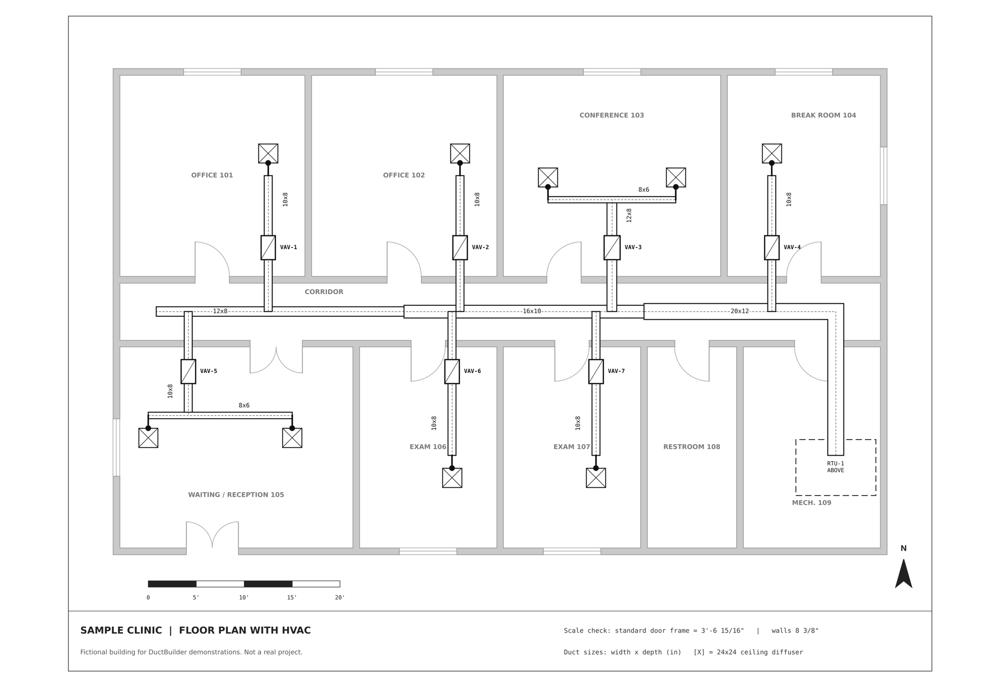
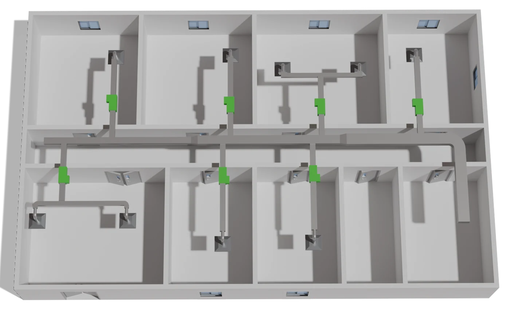

DuctBuilder
A SketchUp extension I designed and built that turns traced lines on a floor plan into finished walls, doors, windows and HVAC ductwork. A complex building with HVAC now takes under 20 minutes instead of more than a week.
Demo on a fictional sample clinic. Tracing sped up 25×; both builds shown close to real time.
One person now does the work of five
Estimated modeling time per floor plan at PX Design, before and after the extension. Work that took a team of five more than a week is now a single person's afternoon task.
| Floor plan | Modeled by hand | With DuctBuilder |
|---|---|---|
| Simple single-level commercial or industrial building, walls only | 8 hours | 5 minutes |
| Complex building with HVAC ductwork, multiple levels | 1+ week, several people | < 20 minutes per floor plan |
PX Design builds 3D models of commercial buildings and their HVAC systems. The models become interactive views inside an HVAC control system app, so building operators can see the rooms, ducts and equipment they are controlling.
Every model started the same way: someone traced each wall of an architectural floor plan by hand in SketchUp, cut every door and window opening, then drew every duct run, elbow, tee and diffuser. It was slow, repetitive and easy to get wrong, and it was the bottleneck for every project.
One extension with two toolsets, walls and ductwork, that share a toolbar, a tracing system and a component library.
Walls
- Trace wall centerlines over the plan; corners are mitred and T-junctions joined automatically.
- Door and window markers snap to walls, preview the real component's footprint, show the gap to their neighbours, and refuse to overlap.
- One click builds 3D walls with openings cut, headers above them, the real door and window models placed, and a floor filled under every closed room. A 2D mode builds solid walls for plan renders.
- Curved walls are re-cut to within 0.05 in. of the true arc and smoothed so they shade as one surface.
Ductwork
- Type the size printed on the plan (14x10, 14, or 10 round) and trace duct centerlines; each size gets its own colour and label.
- Place ceiling diffusers and VAV boxes with live previews; arrow keys flip a VAV box's control panel.
- One click builds the ductwork: round or mitred elbows, tees, tapered size transitions, and round runouts that turn down into each diffuser, all at set ceiling heights.


- Import the floor plan and scale it so a standard door frame measures 3' 6 15/16".
- Trace wall centerlines, then place door and window markers.
- Trace duct runs by size, then place diffusers and VAV boxes.
- Click Build 3D Walls and Build 3D Ductwork. Markers are kept, so any change is just another click.
Problems worth solving
- Rebuilding without losing work. After a build, the markers used for doors and windows are hidden, not deleted. They stay in the model as a record, so the next build restores every opening. A designer can move one door and rebuild in seconds.
- Ductwork geometry. At a junction, the two lines that run most nearly straight through become the trunk and the rest become branches. If the trunk shrinks at a tee, the larger size carries past the branch and then tapers.
- Doors that sit right. The tool finds the head of each door's frame inside the component and centres the frame on the wall, so it stays flush whichever way the leaf swings.
- Built for a non-programmer. The company owner is the main user. Settings live in plain dialogs, component lists are JSON files shared over OneDrive, and every version ships with a written guide.
I designed, built and tested the extension on my own, working from feature requests by the company owner. It has gone through versioned releases and is used on PX Design's projects, including schools, clinics, libraries and county buildings.
Built with AI-assisted coding (Claude); I designed the workflow, set the requirements, and tested and maintained every release.
- Ruby
- SketchUp Ruby API
- SketchUp Pro
- JSON
- Computational geometry
- Technical documentation
What's next
I'm prototyping Wall Tracer, a Python and OpenCV tool that detects walls in raster floor plans, so tracing itself could be partly automated.